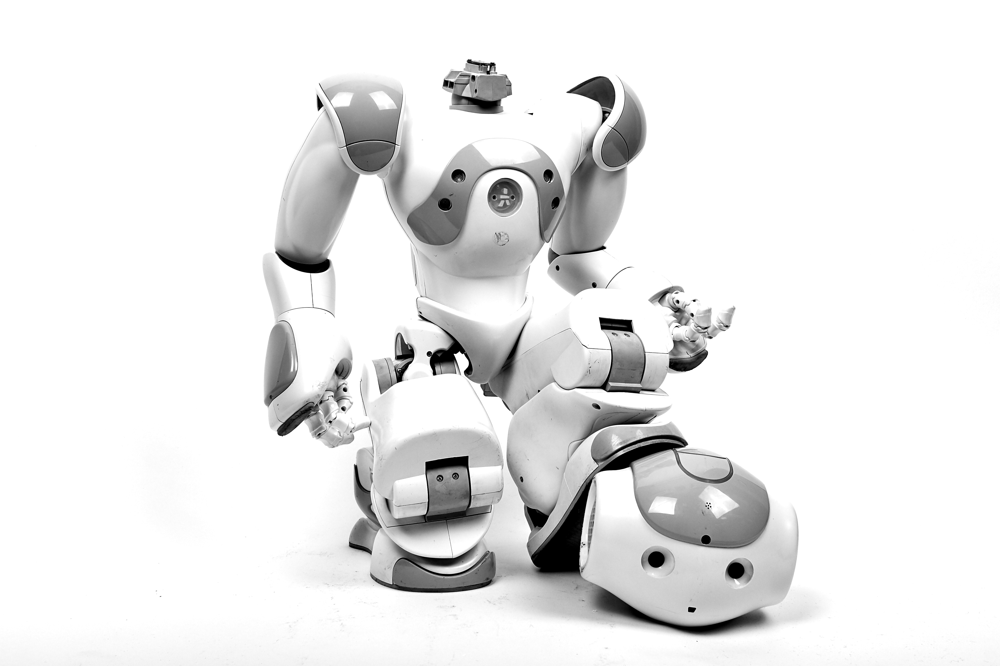

Robot A robot is a machine—especially one programmable by a computer— capable of carrying out a complex series of actions automatically.[2] Robots can be guided by an external control device or the control may be embedded within. Robots may be constructed to take on human form but most robots are machines designed to perform a task with no regard to how they look. 